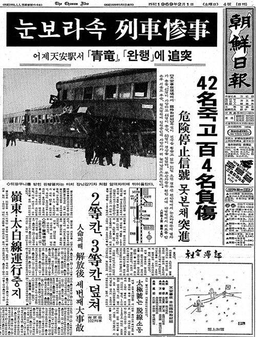
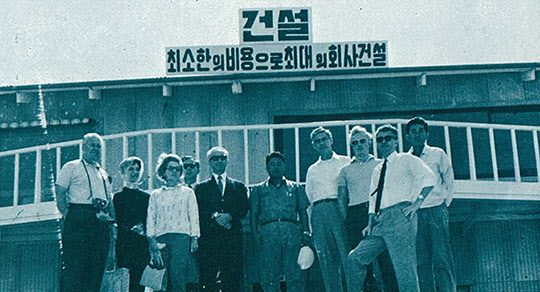

연재일 2014-11-28출처 조선일보 프리미엄조선 연재
박태준은 미국 피츠버그로 가기 위해 서울을 출발했다. 그날은 1969년 1월 31일이었다. 폭설에 덮인 김포공항. 간신히 확보한 활주로가 있어 대한항공은 뜬다고 했다. 경제팀 관료로는 정문도 경제기획원 차관보, 포스코에선 정재봉이 동행이었다. 박태준이 김포공항으로 나가는 시각, 천안역에서는 대형 참사가 발생한다.
오전 11시 52분, 쏟아지는 눈보라 속에서 천안역으로 달려오는 부산 발 서울 행 열차, 그 기관사가 정지 신호등을 보지 못한다. 그것이 천안역 남쪽 800미터 지점에 멈춰 있는 ‘앞선 열차’의 꽁무니를 들이받는다. 사망 42명, 중경상 104명. 끔찍한 비극을 뒤로하고 그는 대한항공에 올랐다.

박태준은 황경로가 느낀 그대로 비장했다. 가장 믿는 참모에게 회사 청산 절차를 준비해 두라는 지시를 내린 그의 심정은 ‘배수진을 치고 사생결단의 일전에 나서는 장수’의 그것이었다. 서울 상공을 벗어나는 그의 머릿속으로는 착잡한 생각들이 정연히 지나가고 있었다.
‘설마 KISA가 배반이야 하겠는가? 혈맹의 우방국들로 구성된 국제협력단 아닌가? 아니야. 그들은 정치지도자가 아니고 사업가 아닌가? 사업가 세계에 정치외교적 타산이 얼마나 먹히겠는가?’
사업가, 이 말이 그는 목구멍에 가시처럼 걸렸다. 사업가와 이윤, 이 함수관계가 못내 찜찜했다.
‘만약 KISA가 등을 돌린다면? 그때 대안은? 애당초 KISA 구성에서 빠지겠다고 했던 일본 밖에 없지 않는가? 이제라도 될 수만 있다면 일본이 좋다. 일본은 기술적으로나 문화적으로나 코쟁이들보다야 우리에게 훨씬 유리하다. 기술은 어떻게 하든 협력을 받아낸다고 하자. 문제는 차관 아닌가? 일본의 외환보유고나 재정 상태로는 한국, 인도네시아 같은 국가에 식민지배상금 물어주는 것만으로도 형편이 빡빡할 것 아닌가….’
1965년(한일국교정상화 협약이 성사되어 일본이 한국에 대일청구권자금을 제공하겠다고 서명한 해)을 기준으로 일본의 외환보유 총액은 8억 달러 수준이었다.
‘더구나 일본에게는 이미 퇴짜를 맞지 않았나? 그러니 또 어떻게 일본에 가서 차관 제공에 협력을 해달라고 하겠는가?’
이 생각의 끝에 박태준은 씁쓸히 침을 삼켰다. 지난해(1968년) 8월에 열렸던 한일각료회의에 대한 아쉬움을 떠올리는 것이었다. 그때 박정희는 김정렴 상공부 장관, 김학렬 경제수석 등 한국 대표단에게 “종합제철에 대한 일본의 협력을 중점적으로 교섭하고 의사를 타진하라”는 지시를 내렸다. 한국과 일본 사이에도 이미 종합제철과 관련한 인연은 맺어져 있었다.
박정희는 1965년 6월 박태준을 통해 니시야마 가와시카제철 사장을 청와대로 초빙한 적이 있었다. 그 뒤로는 박태준이 주도하는 ‘KISA 계획안에 대한 용역 검토’를 일본 철강업계가 주도했다.
그러나 1968년 8월의 박태준은 한일각료회의에 별로 기대를 걸지 않았었다. KISA가 결정적인 장애물이라고 판단했던 것이다. KISA에 참여하는 것 자체를 거부했던 일본이 KISA와 종합제철 건설을 추진하고 있는 한국에게 차관제공, 기술제공을 협력하겠는가? 그는 아니라고 보았다. 실제로 그때 회의는 아무런 성과를 얻지 못했다. 오히려 우리 각료들의 자존심만 상하고 말았다.
오히라 마사요시 통산상에게 “한국을 위해서도 종합제철 건설은 안되는(즉, 한국경제에 폐해만 끼치는) 일이다. 현해탄만 건너면 되니 일본의 질 좋은 철강제품을 국제시세대로 수입하는 것이 훨씬 유리하다”라는 충고를 들어야 했다.
대한항공 여객기가 도쿄에 내렸다. 도쿄에서 합류하는 포스코의 인재가 기다리고 있었다. 영어회화에 유창하며 영어 문법책이라 불리는 최주선이었다. 박태준은 그를 통역으로 택했다. 혹시 생겨날지 모르는 문서작성에 대한 대비이기도 했다. 최주선은 홋카이도 무로랑제철소에서 관리연수를 받는 중에 불려나왔다.
박태준의 1차 목적지는 KISA의 산파역으로서 KISA에 영향력이 막강한 포이(Foy)가 기다리는 피츠버그, 2차 목적지는 IBRD와 미국수출입은행이 있는 워싱턴. 시카고에서 갈아탄 항공기가 피츠버그에 착륙할 준비를 하는 즈음, 박태준은 다시 착잡하고 초조해졌다.
‘차관 조달에 나서지 않으려는 포이를 설득할 수 있을까? 포이가, KISA가 판단을 바꾸지 않는 경우에는 나까지 워싱턴에 가볼 필요가 없지 않나. KISA가 끝까지 그 모양이라면 IBRD나 수출입은행은 만나볼 필요도 없지 않는가? 그렇다고 KISA에게 책임을 물을 방법도 없지 않는가?’
처음부터 허술하게 출발한 협약서에는 KISA가 책임을 지지 않도록 돼 있다. 협약 파기의 최악 사태가 오는 경우, 1966년부터 한국정부를 대표해서 포이나 KISA와 교섭해온 경제팀 관료들이 할 수 있는 일이란 ‘어떻게 우리를 배신할 수 있느냐?’라는 도덕적 항의밖에 없었다. 이미 KISA는 세계은행의 똑똑한 경제 분석가들이 내놓은 ‘한국의 종합제철공장 건설은 시기상조’라는 근거를 쥐고 있으니, 그래서 아주 날씬하게 몸을 뺄 수 있으니, 아무리 도덕에 호소해봤자 그거야 가난한 나라의 서글픈 하소연일 뿐이지 무슨 소용이겠는가?
피츠버그에 도착한 박태준 일행의 숙소는 현지 철강업계의 배려로 미국 철강산업의 역사가 숨 쉬는 듀케인클럽에 마련되었다. 그는 가장 중요한 상대로 KISA 대표 자리에서 물러나긴 했으나 실질적인 대표라 할 포이를 찍었다. 3년 전 피츠버그를 방문한 한국 대통령에게 종합제철소 건설에 대한 협력과 지원의 추파를 던졌던 코퍼스사 대표. 백발이 성성한 백인 노신사는 다부진 체격의 동양인 젊은이와 예의바른 태도로 대화를 나눴다.
“KISA가 포철에 지원하겠다는 결정을 내리면 IBRD도 차관 제공을 결정할 것이며, 우리는 반드시 종합제철소 건설 프로젝트를 성공시킬 것입니다. 종합제철을 하나의 대형사업으로만 판단하는 것이 아닙니다. 근대화의 새로운 역사를 창조하는 견인차를 만드는 것입니다. 이런 점도 깊이 고려해주기 바랍니다.”
박태준의 표정과 말씨는 진지하고 당당했다. KISA의 다른 간부들에게도 똑같은 자세로 똑같은 논리를 피력했다. 철강업계 거구들과 교섭하는 일에 꼬박 이틀을 바쳤다. 그러나 그들이 외교적 수사로 꾸민 답변의 메시지는 명확했다. 자페가 주도적으로 작성한 IBRD 보고서의 ‘한국 종합제철소 프로젝트는 경제적 타당성이 희박하다’는 것을 하나같이 인용했다. 그것은 차마 딱 부러지게 표현하지 못하는, 그러나 명백하고 확실한 ‘NO’ 사인이었다.

박태준은 허탈하고 서글펐다. 자본주의 진영 5대 강대국의 세계적 8개 철강업체로 구성된 KISA.
그 부자들과 맺은 계약서만 믿고 초대형 프로젝트를 시작하여, 착하고 소박한 주민들과 고맙고도 고마운 수녀원을 이주시키고, 부지조성 공사에 박차를 가하고, 은행 융자를 내서 사원주택단지 부지를 매입하고, 직원들을 뽑고, 해외 기술연수를 보내고…, 희망의 시간표에 따랐던 그 모든 일들이 물거품으로 사라질 위기를 맞은 밤. 그는 부자 나라의 호화로운 침대에 드러누워 길게 한숨을 쉬었다.
날이 밝으면 IBRD와 미국수출입은행을 설득하기 위해 워싱턴으로 날아가게 되어 있었다. 아무래도 그 일정은 부질없는 시간낭비 같았다. KISA가 포기한 것을 철강업계보다 훨씬 더 약아빠진 금융기관이 받아줄 리 만무해 보였다.
밤이 깊었다. 박태준은 잠을 이루지 못했다. 방 안엔 어둠과 함께 무거운 침묵이 드리워져 있었다. 그대로는 더 견딜 수가 없었다. 약자의 설움에 짓눌려 있을 것이 아니라 최후의 오기라도 부려야 무슨 길이 뚫릴 것만 같았다. 최주선을 찾았다.
“포이 회장에게 지금 당장 만나자고 전화해.”
“이 늦은 시간에 노인을 깨워도 되겠습니까?”
“돈은 있고 신의가 없는 사람들이잖아. 이대로는 못 가. 30분만 만나자고 해. 이게 KISA와는 마지막이야.”
막 잠자리에 들었다는 포이는 당장 만나자는 제안에 깜짝 놀라서 시간을 물리려 했다. 내일 당신들이 워싱턴으로 떠나기 전에 일찍 시간을 내겠다는 것. 박태준은 지금 꼭 만나야겠다고 버텼다. 이윽고 정장으로 차려입은 노신사가 젊은이의 심야 무례를 점잖게 받았다. 과연 포이가 박태준의 설득에 어떻게 마음을 움직일 것인가?